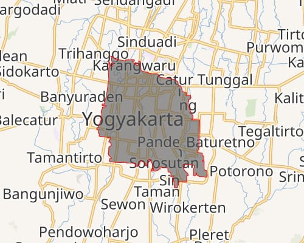

KOTA YOGYAKARTA
Yogyakarta didirikan pada tahun 1755
Yogyakarta adalah ibu kota Provinsi Daerah Istimewa Yogyakarta (DIY), yang memiliki status istimewa karena warisan sejarah dan budayanya sebagai pusat kerajaan Mataram. Kota ini dikenal sebagai kota pelajar, kota budaya, dan kota gudeg, dengan kekayaan sejarah, pendidikan, dan berbagai destinasi wisata seperti Candi Borobudur dan Prambanan. Secara geografis, Yogyakarta berlokasi di Pulau Jawa bagian selatan, berbatasan dengan Sleman, Bantul, dan Samudra Hindia.
Letak Kota Yogyakarta dilalui oleh tiga sungai, yaitu Sungai Winongo, Sungai Gajahwong dan Sungai Code. Sungai Winongo berada di bagian barat Kota Yogyakarta, sedangkan Sungai Gajahwong berada di bagian timur. Sementara Sungai Code berada di tengah Kota Yogyakarta.[17] Keberadaan Sungai Code membelah Kota Yogyakarta menjadi dua bagian. Kota ini terletak pada jarak 600 KM dari Jakarta, 116 KM dari Semarang, dan 65 KM dari Surakarta, pada jalur persimpangan Bandung–Semarang–Surabaya–Pacitan. Kota ini memiliki ketinggian sekitar 112 m dpl